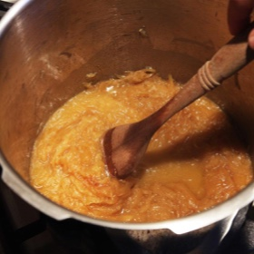

← All recipes
Pressure Cooker Caramelized Onions

Servings: 16 servings · Cook: 35 mins
Ingredients
- 6 tablespoons unsalted butter (3 ounces; about 90 g)
- 3 pounds yellow or mixed onions, sliced 1/8 inch thick (1.4 kg; about 4 to 5 large onions) (see notes)
- 1/2 teaspoon (2 g) baking soda
- Kosher salt and freshly ground black pepper
Directions
- Melt butter in an electric or stovetop pressure cooker over medium heat. Add onions and baking soda and stir to combine. Season with salt and pepper. Cook, stirring, until onions slightly soften and start to release liquid, about 3 minutes. Seal pressure cooker and heat to high pressure (12.5 to 15 psi). Cook at high pressure for 20 minutes. Release pressure by allowing steam to vent, then remove lid.
- Continue cooking with lid off, stirring constantly, until liquid inside has completely reduced and the onions are deep brown and sticky, about 5 minutes. Caramelized onions can be stored in a sealed container in the refrigerator for up to 10 days or frozen for several months.
Original source: seriouseats.com